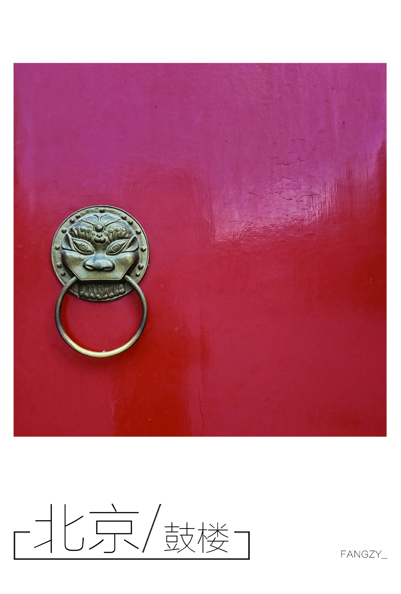
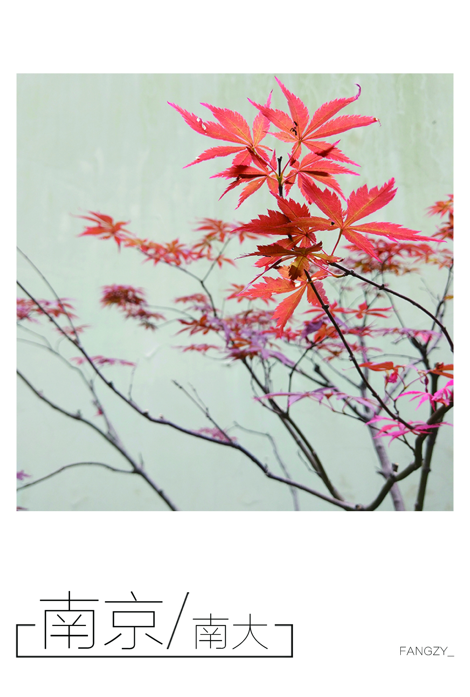
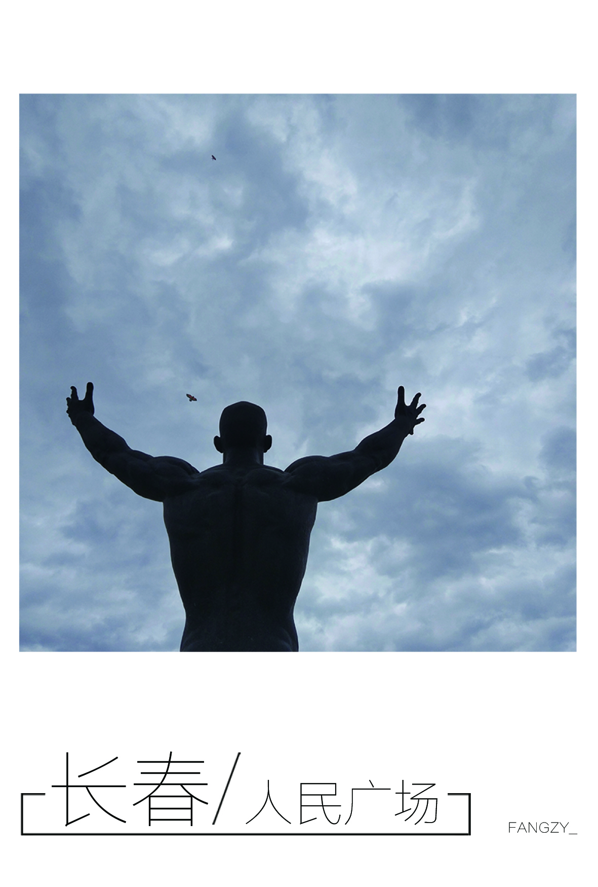
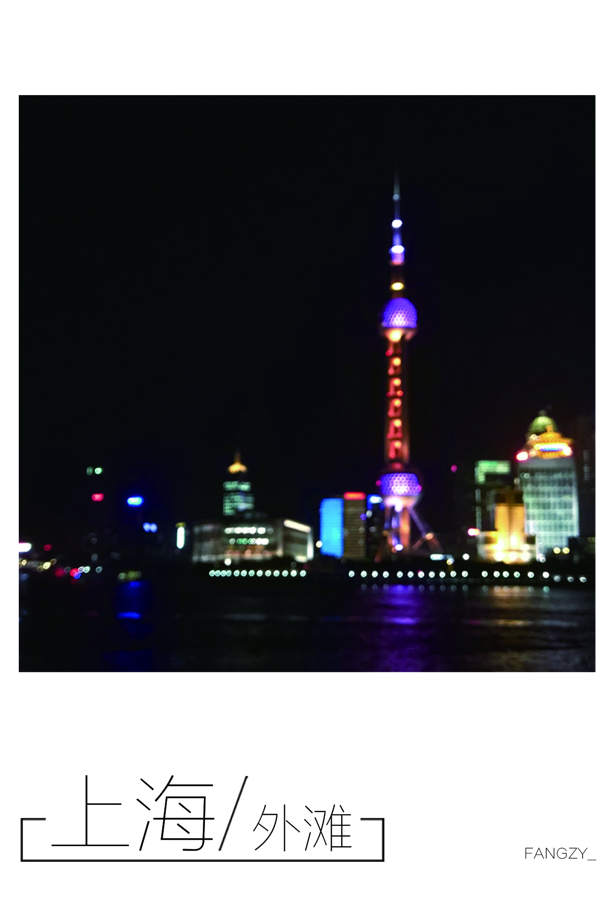
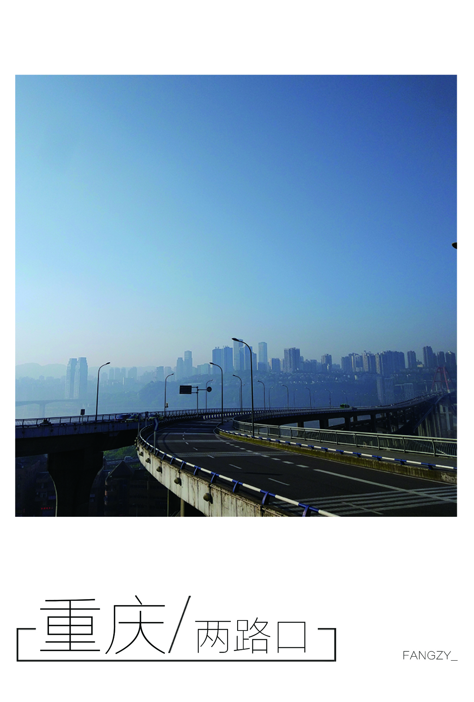
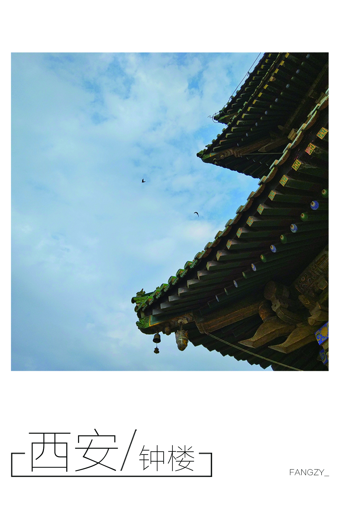
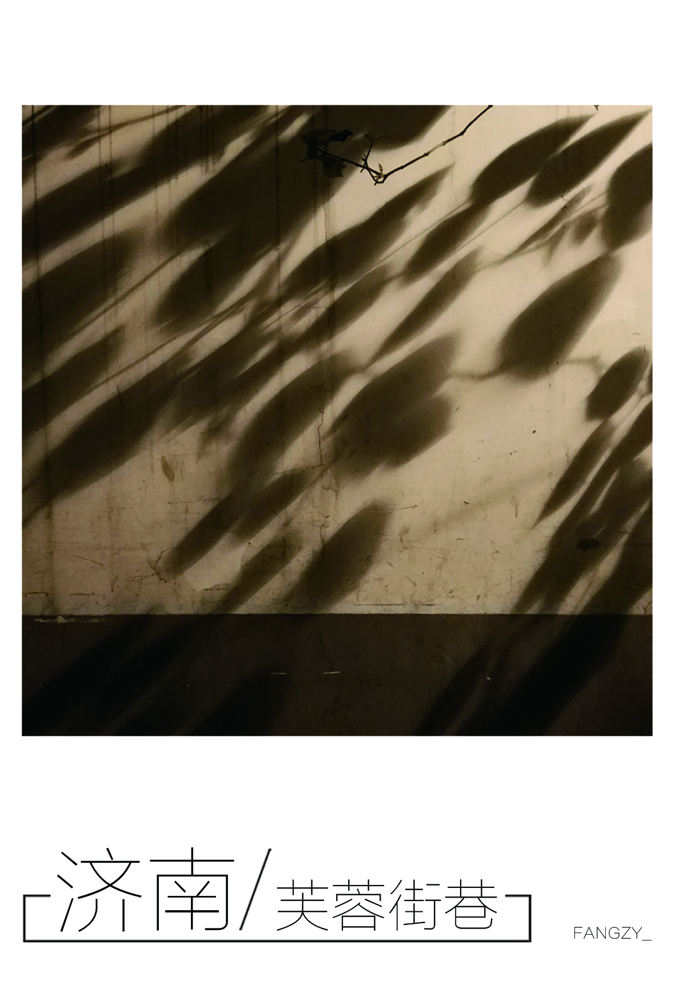

View My Pics
Like many people, travel is one of my favorite things. Before I got into college, I traveled to 12 cities in China alone. That experience is still fresh in my mind. In the future, I will complete my stories in those cities. They are Chongqing, Xian, Xiamen, Tianjin, Jinan, Jilin, Nanjing, Hefei, Wuxi, Zhuhai, Beijing and Shanghai. I list them here first in case I missed any of them :)
These photos were taken during my trip







My steps are still going on ...